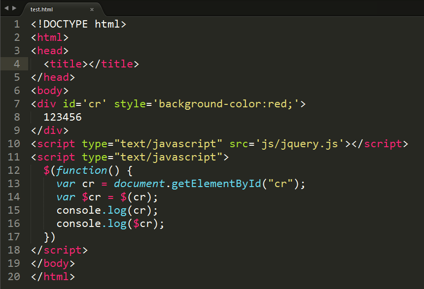
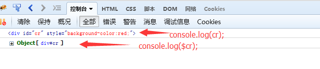
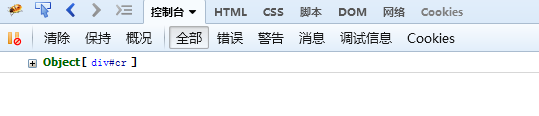
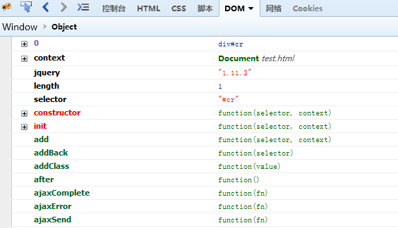
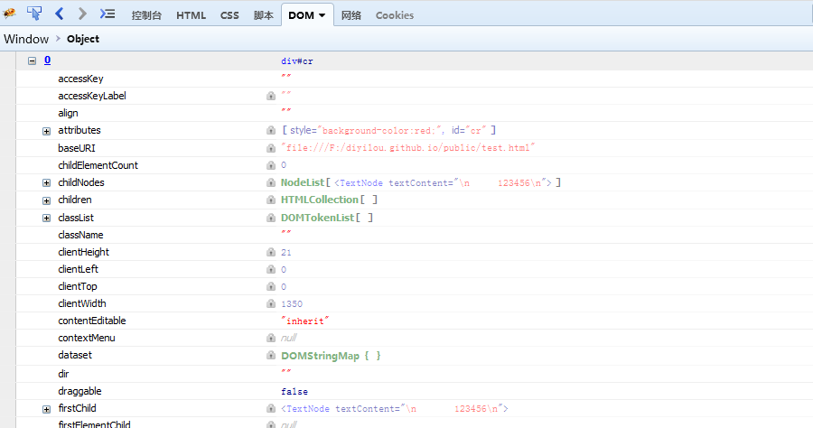
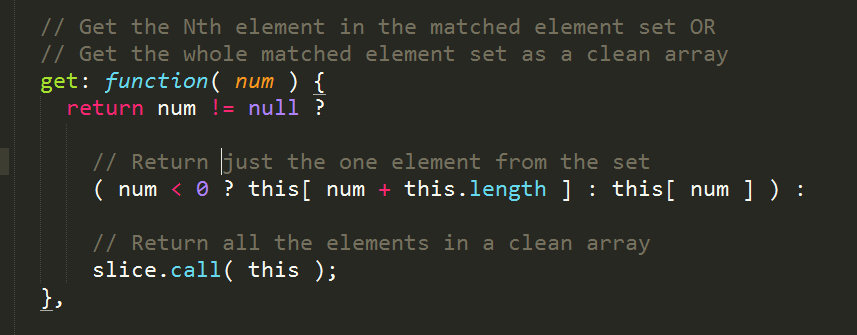

DOM对象： DOM（文档对象模型）是浏览器渲染引擎中的HTML解释器解释了相应的html文件之后获得的一个DOM树，而DOM对象则是利用JavaScript语言的某些方法操作这个DOM树从中获取到的特定DOM树节点，也称为文档元素。这些JavaScript方法有:
document.getELementById("ID")document.getELementsByTagName("tag")
JQuery对象： JQuery是JavaScript的类库，它实现了对JavaScript语言的封装和优化，所以JQuery对象是对DOM对象的包装，是JQuery独有的对象。
注： DOM对象是JavaScript原生对象，而JQuery对象是JQuery对DOM对象包装之后的对象，二者具有各自不同的方法和属性。
DOM转化为JQuery对象：
对于一个DOM对象，只需要把个对象传递给$()函数就可以转化为一个JQuery对象。
var domObj = document.getElementById("#idName"); // DOM对象
var $jqObj = $(domObj); // JQuery对象下面让我们看看这个$()函数是如何工作的:
我写了一个test.html:

其中使用console.log()打印出如图所示:

由上图可以看出，确实将DOM对象转化为JQuery对象了，下面分析一下JQuery是如何工作的：
JQuery类库中含有一个jQuery()函数，这个函数代码如下
var JQuery = function ( selector, context ) {
return new JQuery.fn.init( selector, context );
}所以可以看出调用$()函数并传入selector方法的时候，会自动调用这个JQuery函数，然后在函数内部返回一个构造函数的对象，也就是说，这个时候会调用jQuery.fn.init()函数来生成相关的JQuery对象。而JQuery.fn.init()则是对JavaScript原生生成DOM对象的包装。
JQuery对象转化为DOM对象:
JQuery对象转化为DOM对象有两种实现:
第一种：
var $cr = $("#cr");
var cr = $cr[0];然后我们看看第一种方法的原理是怎么样的:
仍然使用console.log($("#cr")),然后在控制台查看显示结果，会发现结果显示为一个数组对象，如下图所示:

这个时候点击图中的 Object[div#cr],会发现这个数组对象中的第一个属性就是属性值为0的属性:

然后点击属性0进入，查看它的属性值：

由此图可以清晰的看到，属性0中包含着对原生DOM对象的包装，这里面包含了原生DOM对象的方法和属性。
第二种：
var $cr = $("#cr");
var cr = $cr.get(0);对于这个方法，首先我把JQuery类库中的具体实现贴出来:

可以看到，这个get()方法会根据传入的参数，判断是否是为空，如果不为空，就返回选中的元素，如果为空，就返回一个空的数组。